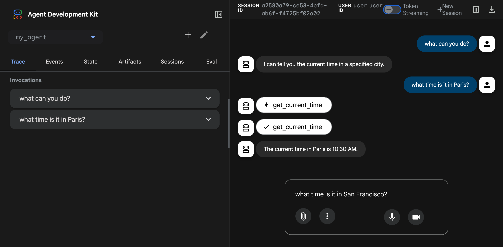
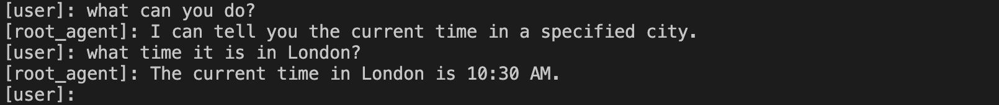

Build a multi-tool agent¶
This quickstart guides you through installing the Agent Development Kit (ADK), setting up a basic agent with multiple tools, and running it locally either in the terminal or in the interactive, browser-based dev UI.
This quickstart assumes a local IDE (VS Code, PyCharm, IntelliJ IDEA, etc.) with Python 3.9+ or Java 17+ and terminal access. This method runs the application entirely on your machine and is recommended for internal development.
1. Set up Environment & Install ADK¶
Create & Activate Virtual Environment (Recommended):
# Create
python -m venv .venv
# Activate (each new terminal)
# macOS/Linux: source .venv/bin/activate
# Windows CMD: .venv\Scripts\activate.bat
# Windows PowerShell: .venv\Scripts\Activate.ps1
Install ADK:
To install ADK and setup the environment, proceed to the following steps.
2. Create Agent Project¶
Project structure¶
You will need to create the following project structure:
Create the folder multi_tool_agent:
Note for Windows users
When using ADK on Windows for the next few steps, we recommend creating
Python files using File Explorer or an IDE because the following commands
(mkdir, echo) typically generate files with null bytes and/or incorrect
encoding.
__init__.py¶
Now create an __init__.py file in the folder:
Your __init__.py should now look like this:
agent.py¶
Create an agent.py file in the same folder:
Copy and paste the following code into agent.py:
import datetime
from zoneinfo import ZoneInfo
from google.adk.agents import Agent
def get_weather(city: str) -> dict:
"""Retrieves the current weather report for a specified city.
Args:
city (str): The name of the city for which to retrieve the weather report.
Returns:
dict: status and result or error msg.
"""
if city.lower() == "new york":
return {
"status": "success",
"report": (
"The weather in New York is sunny with a temperature of 25 degrees"
" Celsius (77 degrees Fahrenheit)."
),
}
else:
return {
"status": "error",
"error_message": f"Weather information for '{city}' is not available.",
}
def get_current_time(city: str) -> dict:
"""Returns the current time in a specified city.
Args:
city (str): The name of the city for which to retrieve the current time.
Returns:
dict: status and result or error msg.
"""
if city.lower() == "new york":
tz_identifier = "America/New_York"
else:
return {
"status": "error",
"error_message": (
f"Sorry, I don't have timezone information for {city}."
),
}
tz = ZoneInfo(tz_identifier)
now = datetime.datetime.now(tz)
report = (
f'The current time in {city} is {now.strftime("%Y-%m-%d %H:%M:%S %Z%z")}'
)
return {"status": "success", "report": report}
root_agent = Agent(
name="weather_time_agent",
model="gemini-2.0-flash",
description=(
"Agent to answer questions about the time and weather in a city."
),
instruction=(
"You are a helpful agent who can answer user questions about the time and weather in a city."
),
tools=[get_weather, get_current_time],
)
.env¶
Create a .env file in the same folder:
More instructions about this file are described in the next section on Set up the model.
Java projects generally feature the following project structure:
project_folder/
├── pom.xml (or build.gradle)
├── src/
├── └── main/
│ └── java/
│ └── agents/
│ └── multitool/
└── test/
Create MultiToolAgent.java¶
Create a MultiToolAgent.java source file in the agents.multitool package
in the src/main/java/agents/multitool/ directory.
Copy and paste the following code into MultiToolAgent.java:
package agents.multitool;
import com.google.adk.agents.BaseAgent;
import com.google.adk.agents.LlmAgent;
import com.google.adk.events.Event;
import com.google.adk.runner.InMemoryRunner;
import com.google.adk.sessions.Session;
import com.google.adk.tools.Annotations.Schema;
import com.google.adk.tools.FunctionTool;
import com.google.genai.types.Content;
import com.google.genai.types.Part;
import io.reactivex.rxjava3.core.Flowable;
import java.nio.charset.StandardCharsets;
import java.text.Normalizer;
import java.time.ZoneId;
import java.time.ZonedDateTime;
import java.time.format.DateTimeFormatter;
import java.util.Map;
import java.util.Scanner;
public class MultiToolAgent {
private static String USER_ID = "student";
private static String NAME = "multi_tool_agent";
// The run your agent with Dev UI, the ROOT_AGENT should be a global public static final variable.
public static final BaseAgent ROOT_AGENT = initAgent();
public static BaseAgent initAgent() {
return LlmAgent.builder()
.name(NAME)
.model("gemini-2.0-flash")
.description("Agent to answer questions about the time and weather in a city.")
.instruction(
"You are a helpful agent who can answer user questions about the time and weather"
+ " in a city.")
.tools(
FunctionTool.create(MultiToolAgent.class, "getCurrentTime"),
FunctionTool.create(MultiToolAgent.class, "getWeather"))
.build();
}
public static Map<String, String> getCurrentTime(
@Schema(name = "city",
description = "The name of the city for which to retrieve the current time")
String city) {
String normalizedCity =
Normalizer.normalize(city, Normalizer.Form.NFD)
.trim()
.toLowerCase()
.replaceAll("(\\p{IsM}+|\\p{IsP}+)", "")
.replaceAll("\\s+", "_");
return ZoneId.getAvailableZoneIds().stream()
.filter(zid -> zid.toLowerCase().endsWith("/" + normalizedCity))
.findFirst()
.map(
zid ->
Map.of(
"status",
"success",
"report",
"The current time in "
+ city
+ " is "
+ ZonedDateTime.now(ZoneId.of(zid))
.format(DateTimeFormatter.ofPattern("HH:mm"))
+ "."))
.orElse(
Map.of(
"status",
"error",
"report",
"Sorry, I don't have timezone information for " + city + "."));
}
public static Map<String, String> getWeather(
@Schema(name = "city",
description = "The name of the city for which to retrieve the weather report")
String city) {
if (city.toLowerCase().equals("new york")) {
return Map.of(
"status",
"success",
"report",
"The weather in New York is sunny with a temperature of 25 degrees Celsius (77 degrees"
+ " Fahrenheit).");
} else {
return Map.of(
"status", "error", "report", "Weather information for " + city + " is not available.");
}
}
public static void main(String[] args) throws Exception {
InMemoryRunner runner = new InMemoryRunner(ROOT_AGENT);
Session session =
runner
.sessionService()
.createSession(NAME, USER_ID)
.blockingGet();
try (Scanner scanner = new Scanner(System.in, StandardCharsets.UTF_8)) {
while (true) {
System.out.print("\nYou > ");
String userInput = scanner.nextLine();
if ("quit".equalsIgnoreCase(userInput)) {
break;
}
Content userMsg = Content.fromParts(Part.fromText(userInput));
Flowable<Event> events = runner.runAsync(USER_ID, session.id(), userMsg);
System.out.print("\nAgent > ");
events.blockingForEach(event -> System.out.println(event.stringifyContent()));
}
}
}
}

3. Set up the model¶
Your agent's ability to understand user requests and generate responses is powered by a Large Language Model (LLM). Your agent needs to make secure calls to this external LLM service, which requires authentication credentials. Without valid authentication, the LLM service will deny the agent's requests, and the agent will be unable to function.
Model Authentication guide
For a detailed guide on authenticating to different models, see the Authentication guide. This is a critical step to ensure your agent can make calls to the LLM service.
- Get an API key from Google AI Studio.
-
When using Python, open the
.envfile located inside (multi_tool_agent/) and copy-paste the following code.When using Java, define environment variables:
-
Replace
PASTE_YOUR_ACTUAL_API_KEY_HEREwith your actualAPI KEY.
- Set up a Google Cloud project and enable the Vertex AI API.
- Set up the gcloud CLI.
- Authenticate to Google Cloud from the terminal by running
gcloud auth application-default login. -
When using Python, open the
.envfile located inside (multi_tool_agent/). Copy-paste the following code and update the project ID and location.multi_tool_agent/.envGOOGLE_GENAI_USE_VERTEXAI=TRUE GOOGLE_CLOUD_PROJECT=YOUR_PROJECT_ID GOOGLE_CLOUD_LOCATION=LOCATIONWhen using Java, define environment variables:
- You can sign up for a free Google Cloud project and use Gemini for free with an eligible account!
- Set up a Google Cloud project with Vertex AI Express Mode
- Get an API key from your Express mode project. This key can be used with ADK to use Gemini models for free, as well as access to Agent Engine services.
-
When using Python, open the
.envfile located inside (multi_tool_agent/). Copy-paste the following code and update the project ID and location.multi_tool_agent/.envGOOGLE_GENAI_USE_VERTEXAI=TRUE GOOGLE_API_KEY=PASTE_YOUR_ACTUAL_EXPRESS_MODE_API_KEY_HEREWhen using Java, define environment variables:
4. Run Your Agent¶
Using the terminal, navigate to the parent directory of your agent project
(e.g. using cd ..):
There are multiple ways to interact with your agent:
Authentication Setup for Vertex AI Users
If you selected "Gemini - Google Cloud Vertex AI" in the previous step, you must authenticate with Google Cloud before launching the dev UI.
Run this command and follow the prompts:
Note: Skip this step if you're using "Gemini - Google AI Studio".
Run the following command to launch the dev UI.
Note for Windows users
When hitting the _make_subprocess_transport NotImplementedError, consider using adk web --no-reload instead.
Step 1: Open the URL provided (usually http://localhost:8000 or
http://127.0.0.1:8000) directly in your browser.
Step 2. In the top-left corner of the UI, you can select your agent in the dropdown. Select "multi_tool_agent".
Troubleshooting
If you do not see "multi_tool_agent" in the dropdown menu, make sure you
are running adk web in the parent folder of your agent folder
(i.e. the parent folder of multi_tool_agent).
Step 3. Now you can chat with your agent using the textbox:

Step 4. By using the Events tab at the left, you can inspect
individual function calls, responses and model responses by clicking on the
actions:

On the Events tab, you can also click the Trace button to see the trace logs for each event that shows the latency of each function calls:

Step 5. You can also enable your microphone and talk to your agent:
Model support for voice/video streaming
In order to use voice/video streaming in ADK, you will need to use Gemini models that support the Live API. You can find the model ID(s) that supports the Gemini Live API in the documentation:
You can then replace the model string in root_agent in the agent.py file you created earlier (jump to section). Your code should look something like:

Tip
When using adk run you can inject prompts into the agent to start by
piping text to the command like so:
Run the following command, to chat with your Weather agent.

To exit, use Cmd/Ctrl+C.
adk api_server enables you to create a local FastAPI server in a single
command, enabling you to test local cURL requests before you deploy your
agent.

To learn how to use adk api_server for testing, refer to the
documentation on using the API server.
Using the terminal, navigate to the parent directory of your agent project
(e.g. using cd ..):
project_folder/ <-- navigate to this directory
├── pom.xml (or build.gradle)
├── src/
├── └── main/
│ └── java/
│ └── agents/
│ └── multitool/
│ └── MultiToolAgent.java
└── test/
Run the following command from the terminal to launch the Dev UI.
DO NOT change the main class name of the Dev UI server.
mvn exec:java \
-Dexec.mainClass="com.google.adk.web.AdkWebServer" \
-Dexec.args="--adk.agents.source-dir=src/main/java" \
-Dexec.classpathScope="compile"
Step 1: Open the URL provided (usually http://localhost:8080 or
http://127.0.0.1:8080) directly in your browser.
Step 2. In the top-left corner of the UI, you can select your agent in the dropdown. Select "multi_tool_agent".
Troubleshooting
If you do not see "multi_tool_agent" in the dropdown menu, make sure you
are running the mvn command at the location where your Java source code
is located (usually src/main/java).
Step 3. Now you can chat with your agent using the textbox:
Step 4. You can also inspect individual function calls, responses and model responses by clicking on the actions:
With Maven, run the main() method of your Java class
with the following command:
With Gradle, the build.gradle or build.gradle.kts build file
should have the following Java plugin in its plugins section:
Then, elsewhere in the build file, at the top-level,
create a new task to run the main() method of your agent:
tasks.register('runAgent', JavaExec) {
classpath = sourceSets.main.runtimeClasspath
mainClass = 'agents.multitool.MultiToolAgent'
}
Finally, on the command-line, run the following command:
📝 Example prompts to try¶
- What is the weather in New York?
- What is the time in New York?
- What is the weather in Paris?
- What is the time in Paris?
🎉 Congratulations!¶
You've successfully created and interacted with your first agent using ADK!
🛣️ Next steps¶
- Go to the tutorial: Learn how to add memory, session, state to your agent: tutorial.
- Delve into advanced configuration: Explore the setup section for deeper dives into project structure, configuration, and other interfaces.
- Understand Core Concepts: Learn about agents concepts.